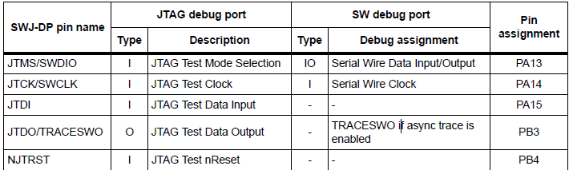

Introduction
Debugging a hardware has two mode, using a software simulator or basing a real hardware. Keil-MDK5 support both of modes.
Debug with a real device
Debugging a real device would require the device to support debug protocols. For example, the AVR atmega328p support debugWire interface. STM32F103rb supports SWD (serial wire debugg) interface, JTAG interface.
In STM32F1, the debug feature is supported by the cortex-M3 core. It is an ARM CoreSight debug technology that combines the JTAG port and SW port together, and internally connect to PPB (Private peripheral bus) AHB-lite bus. The cortex-M3 core supports following debug features:
Pinouts

After enable debugging function, the relevant pins cannot be used by application code.
The interface can be used for debugging and tracing.